Поток
Автор: Якушева Елена
Стандартный поток — это принцип расположения элементов на странице без использования стилей. Если
создать HTML-код и не подключить CSS, браузер отобразит страницу по встроенным стилям. Например,
заголовки <h1> будут больше, чем <h2>, а ссылки будут синими
и подчёркнутыми и они будут расположены согласно базовым правилам.
Элементы на странице можно разделить на две популярные группы: блочные (block) и строчные
(inline). Например, <h1>, <p>, <div> — это
блочный элемент, а <img>, <span> или <a> —
строчные. Поменять это поведение можно с помощью CSS-свойства display.
Если не использовать стили, браузер создаёт стандартный поток элементов. Блочные и строчные элементы отображаются по-разному.
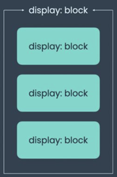
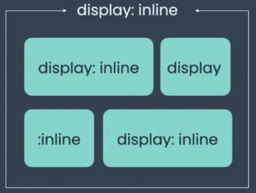
Ширина и высота
С помощью свойств width и height можно задавать размеры контентной
области блока. По умолчанию элементы с блочным отображением (display: block)
занимают всю ширину родителя, а высота подстраивается под контент. Элементы со строчным
отображением (display: inline) или строчно-блочным
(display: inline-block) подстраиваются под контент, но для inline-block можно
задавать размеры.
Пример:
.class {
width: 200px;
height: 200px;
}В этом случае размер контентной области элемента будет 200 на 200 пикселей. Лучше не задавать конкретную высоту блока, так как велика вероятность переполнения, т.е. когда контентная часть вылезает за границы блока. По умолчанию высоте задается значение, при котором высота автоматически подстраивается под контент:
height: auto;Padding
Свойство padding отвечает за внутренние отступы. В рамках разговора о блочной модели важно помнить, что по умолчанию внутренние отступы прибавляются к ширине и высоте элемента.
То есть, если мы допишем нашему элементу padding:
.class {
width: 200px;
height: 200px;
padding: 15px 20px;
}то ширина элемента будет равна 200 + 20 + 20 = 240 пикселей, а высота 200 + 15 + 15 = 230 пикселей.
Вообще padding, так же как и margin, который рассмотрим далее, имеет 4 значения, которые можно указать по отдельности:
padding-top: 5px;
padding-right: 10px;
padding-bottom: 25px;
padding-left: 30px;значения будут определяются по часовой: верх, право, низ, лево. Также эту запись можно сократить, если образуются пары отступов: сверху и снизу, слева и справа, тогда запись будет выглядеть так:
padding: 20px 15px;что будет значить 20 пикселей сверху и снизу, и 15 пикселей справа и слева. При этом если по всем сторонам один отступ, например 5 пикселей, то прописывается так:
padding: 5px;Margin
Внешние отступы, за которые отвечает свойство margin, не прибавляются к размерам элемента, но влияют на то, сколько места на странице он занимает. Если элементу из нашего примера мы зададим внешние отступы, то он будет занимать больше места, двигая при этом своих соседей:
margin: 50px;тогда со всех сторон вокруг элемента будет отступ в 50 пикселей. Так же можно указать более явные margin:
margin-top: 50px;
margin-right: 50px;
margin-bottom: 50px;
margin-left: 50px;Когда нужно сдвинуть элемент на странице к определенной стороне, то можно использовать margin с указанием стороны и значением auto:
margin-right: auto;В данном случае элемент прижмется к левой границе родительского элемента.
Еще примеры:
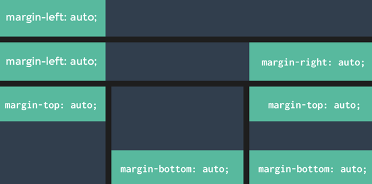
Если указать для margin два значения, то первое применится к внешним отступам по вертикали, а второе — к внешним отступам по горизонтали.
margin: 0 auto;Краткую запись с двумя значениями часто используют, когда требуется отцентрировать элемент. Однако в других ситуациях лучше к ней не прибегать, так как это ухудшает читаемость кода.
Но аккуратнее с margin, ведь может произойти схлопывание… Или по-другому margin collapsing — это схлопывание внешних отступов. Такое поведение наблюдается только у вертикальных внешних отступов. Проще говоря, когда вертикальные отступы двух блочных элементов соприкасаются, они не складываются, а накладываются друг на друга, образуя общее пространство, равное большему из отступов.
Рассмотрим на примере:
У нас есть 2 элемента:
<div class="first"></div>
<div class="second"></div>Проришем им внешние отступы:
.first {
margin-bottom: 30px;
}
.second {
margin-top: 20px;
}Тут мы ожидаем, что расстояние между ними будет 50 пикселей, но нет, в этот момент произойдет то самое схлопывание и расстояние между элементами будет 30 пикселей.
Важно знать, что вертикальные отступы не схлопываются между элементами, у которых указано
свойство position: absolute или если у родительского элемента указано свойство
display: grid или display: flex, то отступы дочерних элементов не
схлопнутся.
Так же, чтобы избежать схлопывания лучше всего указывать только нижний отступ —
margin-bottom.
Border
При определении размеров элемента в расчёт берутся и рамки, за которые отвечает свойство border. Допишем нашему элементу border:
.class {
width: 200px;
height: 200px;
padding: 15px 20px;
border: 5px solid white;
}Теперь конечные размеры нашего элемента будут: ширина — 200 + 20 + 20 + 5 + 5 = 250 пикселей, а высота 200 + 15 + 15 + 5 + 5 = 240 пикселей.
Блочная модель
Блочная модель, она же box model — это алгоритм расчёта размеров каждого отдельного элемента на странице, которым браузеры пользуются при отрисовке. Чтобы точно понимать, каким в итоге получится блок и сколько места он займёт, держите в голове следующую картинку:
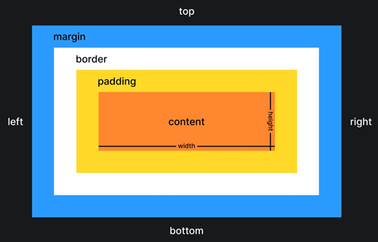
width— ширина элемента;height— высота элемента;padding— внутренние отступы;border— рамка по краю элемента;margin— внешние отступы.
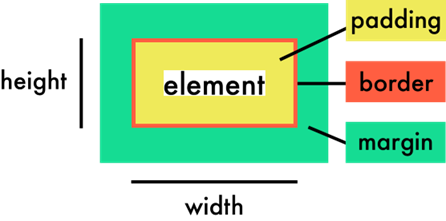
Box-sizing
По умолчанию браузеры рассчитывают размеры элемента ровно так, как описано выше, прибавляя внутренние отступы и рамки к ширине и высоте. С этим могут быть связаны неприятные сюрпризы, когда элемент в вёрстке занимает больше места, чем вы ожидаете.
Мы можем поменять стандартное поведение и указать браузеру, что ширина и высота, заданные в CSS, должны включать в себя, в том числе, внутренние отступы и рамки. Делается это при помощи свойства box-sizing.
Например создадим 2 элемента на странице:
<div class="el first"></div>
<div class="el second"></div>И зададим им общий стиль:
.el {
display: inline-block;
width: 100px;
height: 100px;
padding: 25px;
border: 10px solid #ffffff;
}Отличие будет только в цвете фона и значении box-sizing:
.first {
box-sizing: content-box;
background-color: #2e9aff;
}
.second {
box-sizing: border-box;
background-color: #f498ad;
}В итоге, как мы видим на картинке ниже, элементы получились разного размера. Почему? Ведь ширина, высота, отступы и рамка одинаковые…
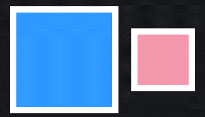
Причина в том, что при значении свойства box-sizing, равном
content-box, ширина элемента рассчитывается следующим образом: Ширина контентной
области (100) + внутренний отступ слева и справа (25 + 25) + ширина правой и левой рамок (10 +
10). Итого: 170 пикселей. Аналогично с высотой. Выходит что первый элемент получил размеры 170
на 170.
Размер второго элемента считается иначе. Из-за значения свойства box-sizing браузер
воспринимает width и height как конечные размеры элемента. Получается
что в 100 пикселей указанной ширины уже включены и внутренние боковые отступы и боковые рамки.
Размеры второго элемента будут 100 на 100.
В качестве значения для свойства box-sizing невозможно использовать что-то кроме
ключевых слов. Значение может быть только одно.
Доступные значения:
content-box— значение по умолчанию. Финальная ширина = ширина + правый внутренний отступ + левый внутренний отступ + правая рамка + левая рамкаborder-box— значениеwidthиheightявляются финальными размерами элемента. Финальная ширина = ширина
И помните:
- Свойство нельзя анимировать при помощи
transition - Свойство не наследуется.
- При любом значении свойства внешние отступы (
margin) в расчёт не берутся. - Значение по умолчанию:
content-box.
Display
По умолчанию почти все элементы в HTML имеют блочный и строчный тип отображения. Но в вёрстке
часто бывает, что нужно сделать элемент не строчным, а блочным. И наоборот. Тут на помощь
приходит свойство display.
Рассмотрим четыре основных значения:
- блочные,
display: block, - строчные,
display: inline, - блочно-строчные,
display: inline-block, - гибкие или флексовые (флексы),
display: flex.
Блочные:
block — элемент отображается как блок. Блочные элементы в нормальном потоке
располагаются друг под другом, всегда занимая всю доступную ширину. Высота блочного элемента по
умолчанию равна высоте его содержимого. Примером элемента, который имеет значение
display: block, может быть div. Даже если ширина блочного элемента
явно задана и позволяет разместить справа ещё один такой элемент, поток всё равно продолжит
выстраивать их друг под другом.
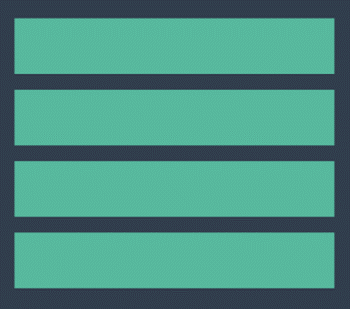
Строчные
inline — элемент отображается как строчный элемент и не создаёт новый блок. Элемент
занимает столько места, сколько ему нужно для отображения содержимого. Примером элемента,
который имеет значение display: inline, может быть span. Строчные
элементы располагаются друг за другом, как слова в предложении. Ширина и высота строчного
элемента равна ширине и высоте содержимого. В отличие от блочного элемента, мы не можем
управлять шириной и высотой строчного элемента через CSS.
Несколько строчных элементов будут стремиться уместиться на одной строке, насколько хватает ширины родителя. Если ширины родителя не хватает, то лишний текст строчного элемента переносится на следующую строку.
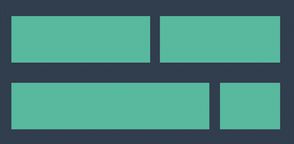
Ключевые моменты:
- не реагируют на
widthиheight; - воспринимают только горизонтальные внешние отступы (
margin); - воспринимают только горизонтальные внутренние отступы (
padding); - если им задать вертикальный
padding, то визуально увеличатся, но при этом не станут занимать больше места, т. е. не оттолкнут другие элементы; - воспринимают рамки (
border), но при этом, аналогичноpadding, сверзу и снизу не увеличат занимаемое место.
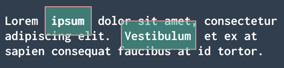
Строчно-блочные
inline-block — элемент отображается как строчный элемент, но его содержимое может
быть отформатировано как блок. Элемент занимает столько места, сколько ему нужно для отображения
содержимого, но может иметь ширину и высоту. Примером элемента, который имеет значение
display: inline-block, может быть button.
По сравнению с display: inline, основным отличием является то, что
display: inline-block позволяет задавать ширину и высоту элемента. По сравнению с
display: block, основным отличием является то, что
display: inline-block не добавляет разрыв строки после элемента, поэтому элемент
может сидеть рядом с другими элементами.
Иногда возникает необходимость расположить в ряд несколько элементов с заданными размерами.
Элементы со строчным боксом для этого не подходят, так как не воспринимают размеры. Элементы с
блочным боксом тоже не подходят, так как до и после них существует перенос строки. Простой
способ - использовать элементы с строчно-блочным боксом. В HTML нет элементов с строчно-блочным
боксом по умолчанию, но любой элемент можно переключить в такой режим отображения, задав ему
свойство display со значением inline-block.
Особенности элементов со строчно-блочным боксом:
- им можно задавать размеры, рамки и отступы, как и элементам с блочным боксом;
- их ширина по умолчанию зависит от содержания, а не растягивается на всю ширину контейнера;
- они не порождают принудительных переносов строк, поэтому могут располагаться на одной строке, пока помещаются в родительский контейнер;
- элементы в одной строке выравниваются вертикально подобно элементам со строчным боксом.
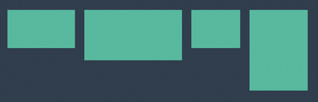
Флексы
flex — основной инструмент построения крупных сеток и микросеток.
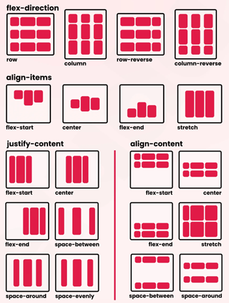
Есть несколько особенностей, которые следует помнить и учитывать при использовании флексов:
- все блоки очень легко делаются «резиновыми», что уже следует из названия
flex; - элементы могут сжиматься и растягиваться по заданным правилам, занимая нужное пространство;
- выравнивание по вертикали и горизонтали, базовой линии текста, отлично работает;
- расположение элементов в HTML не имеет решающего значения. Его можно поменять в CSS;
- элементы могут автоматически выстраиваться в несколько строк/столбцов, занимая всё предоставленное место;
- множество языков в мире используют написание справа налево
rtl(right-to-left), в отличии от привычного намltr(left-to-right), флекс адаптирован для этого, т.е. в нём есть «начало» и «конец», а не «право» и «лево»; - синтаксис CSS-правил очень прост и осваивается довольно быстро.
При этом есть вещи, которые не стоит забывать при использовании флексбокса:
- Не используйте флексы там, где в этом нет необходимости.
- Разберитесь с флексбоксом и знайте его основы. Так намного легче достичь желаемого результата. К примеру, по умолчанию флекс-элементы вытягиваются по поперечной оси и установленное значение высоты для элемента никак не учитывается.
- Не забывайте про
margin. Они учитываются при установке выравнивания по осям. Важно помнить, чтоmarginво флексбоксе не «схлопываются», как это происходит в обычном потоке. - Значение
floatу флекс-блоков не учитывается и не имеет значения.
Но подробнее о них вы узнаете в другой статье ;)